图像与文本之间可共享引导向量
在统一多模态模型里，从一种模态提取的引导向量能零样本迁移到另一种模态，且双向生效。
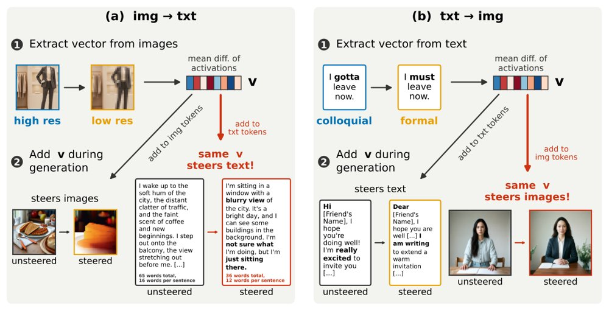
从一个模态提取的引导向量可零样本双向迁移：同一向量既能引导本模态生成，也能不加适配地引导另一模态，图中对比了各概念在本模态内与迁移后的峰值触发率。
解决了什么问题。以往对引导向量（steering vector）的研究基本在语言模型和图像生成两个社区各自进行，很少有人检验同一方向能否跨模态起作用。作者把「模态是否统一」这一宽泛问题操作化为跨模态引导：向量在一个模态上被找到，再原封不动地加到另一个模态的 token 上，观察它是否仍能因果地改变生成结果。相比表征相似度这类相关性证据，引导干预本身带有因果性。
方法。作者在若干共享参数、同时做语言与图像生成的统一多模态模型（UMM）上做实验，覆盖三种模型。他们用最小差异输入对构造引导向量，做法是取正负样本隐状态的均值之差；向量只在单一模态的样本上提取，之后不加任何适配、也不接触目标模态数据，就直接施加到另一模态的生成过程上。这样共形成四种设置：向量的提取模态与应用模态两两组合；此外还比较了单层与全层的施加方式。所测概念包括情绪、年龄、表情、整洁与混乱，以及物体大小、深度、空间位置、颜色等视觉属性，共七个概念。
关键结果。在情绪、物体大小等多个被引导的概念上，引导向量都能双向零样本迁移，即文本到图像和图像到文本；即便是「正式与口语」这类高度偏向单一模态的概念，向量在另一模态中也常引发可解释的一致效果，例如更正式的服装与设计。几何上，尽管文本与图像表征之间存在明显的模态间隔，跨模态迁移性强的向量在同一概念下倾向于指向相近方向；作者报告该相关分析每个模型、每个迁移方向使用 21 个点（7 个概念 × 3 个层范围，空间概念因在多数设置下无法引导而被排除）。各概念的峰值触发率等具体数值论文正文摘录未给出具体数字，需查阅原文图表。作者也指出空间（左与右）是预期最难引导的概念。
为什么值得看。如果控制手段天然跨模态生效，那么一次安全干预或知识编辑就可能同时覆盖文字与视觉输出，而不必为每个模态单独训练控制器。这也为「模态无关」的可解释性工具提供了一个可操作的实验范式。
局限 / 存疑。结论建立在三种统一多模态模型和七个概念上，作者自己就呼吁把发现扩展到其他模型家族与新概念；空间关系这类概念在多数设置下根本引导不动，说明迁移并非普遍成立。几何分析每格仅 21 个点，且评测依赖评判模型与人工验证，迁移效果的稳健性与判定标准仍待更多工作检验。
模型可解释性、模型内部机制
生成式 AI
alphaXiv · arXiv
前沿MLLM当机器人智能体：直接控制与调用策略的边
在EBench的510个测试回合上，GPT-6-Astra分别以直接控制和调用后训练策略两种方式控制机器人。
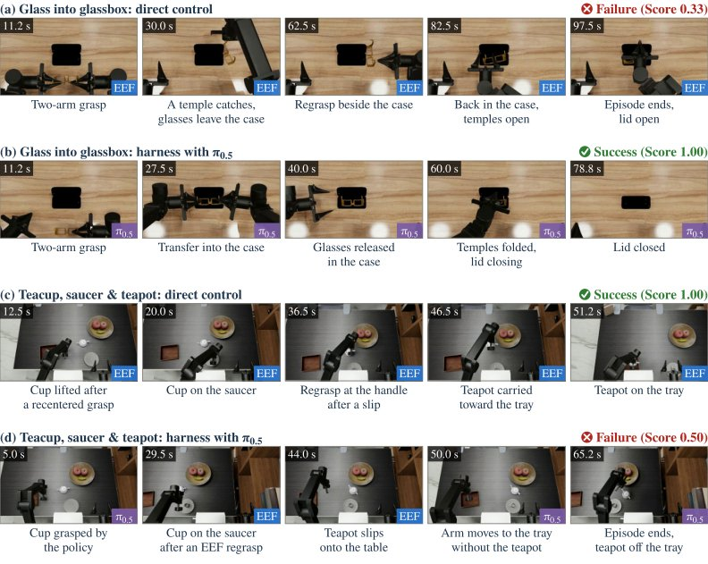
同一测试场景下GPT-6-Astra智能体在直接控制与以π0.5为工具的harness两种配置中的关键帧，标注了视频时间、每帧的执行者与回合结果，包括(a)(b)玻璃入展示盒与(c)(d)茶杯、茶碟与茶壶两组任务。
解决了什么问题。前沿多模态大模型不经机器人专门后训练就能输出末端执行器指令，但它与后训练的VLA、WAM策略在不同操作需求下谁强谁弱、边界在哪，此前没有被系统刻画。另一方面，让智能体通过harness调用一个后训练策略执行动作，能否补上直接控制的短板、又会引入哪些新的失效模式，同样缺少配对证据。
方法。作者在诊断性操作基准EBench上把GPT-6-Astra作为智能体核心，采用与后训练策略完全相同的RGB图像加本体感觉观测协议，不使用深度、相机标定或仿真真值，每个任务仅提供一段标注演示作为单次上下文学习。评测两种配置：直接控制下由模型直接生成路径点命令；harness-with-policy下它还可以调用后训练VLA（π0.5）或WAM（InternW0-Δ）执行动作。全部510个测试回合分别与排行榜上的后训练策略对比，并对配对回合做执行轨迹与失败事件分析。
关键结果。直接控制下整体成功率为46.7%、阶段完成分0.654，超过在6600条域内演示上训练的Qwen-RobotManip与π0.5等后训练策略；短时程任务成功率73.2%排名第一，在四个泛化维度上的成功率波动最小，并能零样本完成两条对比策略都失败的新组合指令。但长时程任务成功率降至27.3%，桌面操作20.0%，高精度接触密集任务仅11.3%。通过harness调用策略后，整体成功率升至53.0%（π0.5）和56.0%（InternW0-Δ），每次成功所耗token减少一半以上，其中InternW0-Δ配置超过表1中所有对比的后训练策略。
为什么值得看。结果把前沿MLLM智能体的能力边界定位在“任务级推理”与“物理执行”之间：语义与空间先验足以支撑任务理解、泛化与回合内纠错，但执行侧仍要靠后训练策略的闭环反馈，两者是互补而非替代关系。论文进一步把剩余差距归因于策略调用的子目标接口、按能力委派和恢复控制后的抓取保持，为后续harness设计给出了具体抓手。
局限 / 存疑。评测只覆盖一个前沿MLLM（GPT-6-Astra）、一个同步执行的仿真基准和两个后训练策略，未测真实机器人、执行时延与异步执行，也未系统比较其他模型作为智能体核心。即便在harness配置下，高精度接触密集任务仍无进展，且由于智能体对多数步骤不加区分地委派、策略只执行固定指令而不理会子目标、智能体恢复控制后未维持抓取，多个任务的表现低于单组件各自的上界。
AI 智能体 Agent / 自主智能
机器人 & 具身智能
alphaXiv · arXiv
VGGT冻结特征比自身置信度更早知道失败
线性探针在冻结的VGGT特征上预测位姿失败，ROC-AUC达93.5%，远高于模型自带点图置信度的79.7%。
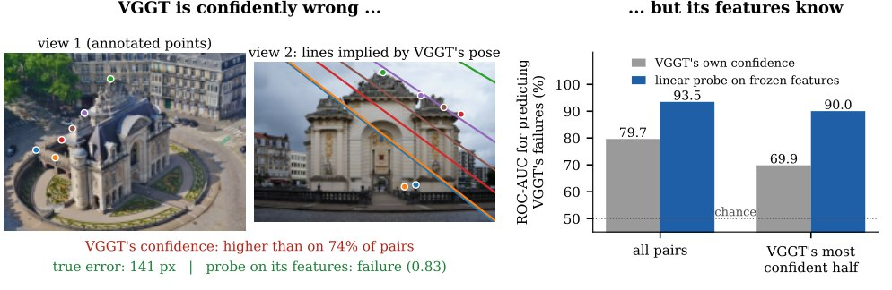
图1：同一座大门的航拍与地面视角——VGGT对该图像对的置信度高于74%的HardMatch样本，但其预测相机推出的极线偏离标注点141 px，而冻结特征上的线性探针成功标出了这次失败。
解决了什么问题。前馈三维重建模型（如VGGT）一次前向就回归出相机与几何，却对预测的相机位姿不提供任何不确定性，错误的相对位姿与正确的看上去没有区别。而这类模型确实会失败：在HardMatch基准上，VGGT有35%的图像对几何明显错误。论文追问的是，冻结的模型内部是否「知道」自己的位姿错了。
方法。作者在VGGT冻结特征上训练线性探针（PCA降到128维后接L2正则逻辑回归），采用按HardMatch类别分组的10折交叉验证，保证测试类别从未在训练中出现，并与点图置信度、深度置信度以及「在VGGT全部输出上训练的分类器」对比。为了定位信号来源，他们逐块探测编码器与聚合器的每一层，并在第二个模型π³上重复同样流程。最后把在HardMatch上训练好的探针不做任何重训，直接迁移到PhotoTourism与ScanNet-1500。
关键结果。过滤后HardMatch共903对、97个类别，VGGT在50 px阈值下失败率34.9%（10/20/100 px下分别为63.7%、51.5%、25.1%）。探针在未见类别上的ROC-AUC为93.5%［91.7, 95.2］，而VGGT的点图置信度为79.7%［76.6, 82.4］，在其全部输出上训练的分类器也只有77.7%；以0.5为阈值，探针判对87.5%的样本，以78.9%的精确率抓到87.6%的失败。在VGGT最有信心的那一半样本中仍有12.2%失败，此时探针AUC为90.0%，置信度仅69.9%；按置信度四分位分层后，层内置信度接近随机（47%–64%），探针仍有82%–92%。信号在聚合器中部突然出现：编码器各块不超过65.2%，块11之后为69%，块12后升到81%，块15后达93%。π³上同样成立，最好探针91.7%对比其自身置信度62.2%（其最有信心一半上仅52.8%）。零样本迁移到PhotoTourism的旋转失败，10°阈值下AUC 94.6%、15°下97.5%，高于真值co-visibility的87.0%/89.8%。选择性问题：保留探针最信任的50%样本，失败率降到3.8%（按置信度排序为12.4%），风险-覆盖率曲线下面积为0.096，接近完美排序0.070，约填补了置信度与oracle之间70%的差距。
为什么值得看。这意味着在SLAM、建图、新视角合成等下游系统中，只需在模型本来就算出的特征上加一层线性分类器，就能在不可信位姿上主动弃权，而不必依赖模型输出的置信度。它也说明语言模型中被广泛研究的「内部知道自己错了」现象，同样存在于三维基础模型中。
局限 / 存疑。硬伤有三处：探针本身是有失败标签监督训练的，而VGGT的置信度是免费的，作者的应对是同一协议下训练输出分类器并做跨数据集测试；HardMatch没有真值位姿，失败由每对约11个标注点对应的极射误差定义，混入了旋转、平移与内参误差。研究只覆盖VGGT与π³两个模型、且以两视图为主，多视图下PhotoTourism失败率降到0.3%、探针不再明显优于置信度，用探针筛边也没有改善旋转平均。更要紧的是,单一探针无法覆盖ScanNet上主导的短基线平移失败（AUC仅44%–48%，置信度为61%–64%），而ScanNet自训练的探针能达到90.5%–91.0%，说明模型内部的失败感知不是单一标量。
模型可解释性、模型内部机制
计算机视觉 CV
alphaXiv · arXiv
策略其实是框架：换接口为何让智能体崩溃
论文把智能体回报拆成框架上限与策略失配：换接口抬高上限却放大失配，重新训练后又反超。
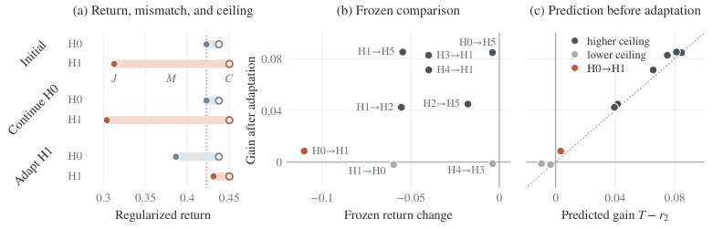
图：有害的修改在适配后因抬高上限而变得有益——(a) 源 checkpoint、其续训版本与新 harness 下适配版本在各自 harness 中的回报 J、上限 C 与失配 M，(b)(c) 九个被冻结比较否决的换 harness 情形的增益对冻结回报变化与预测增益 T−r2 的关系。
解决了什么问题。语言模型智能体在后训练和部署时都依赖一套 harness（提示、工具与控制逻辑），而自动化的 harness 设计通常用固定权重的模型给候选接口打分，默认模型在旧接口学到的东西能迁移到新接口。但同一处接口改动可能让一个模型变好、让微调后的模型变差，因此需要回答：策略究竟从 harness 里学到了什么，换掉 harness 之后什么会留下来。
方法。作者在 KL 正则化控制下证明，最优策略的 log odds 正比于动作分数之差，即策略携带了训练 harness 对各动作的相对偏好；再用正规化性能差恒等式把部署回报写成「上限 C 减失配 M」，训练只改变 M，换 harness 则同时移动两项。实验在 MiniWoB++ 的三个任务、六套 harness（H0–H5）上做受控对照：翻转观测字段顺序、加入批量点击动作，并比较冻结权重与等量继续训练后的表现。在 Terminal-Bench Lite 上，则以更强模型代替最优策略来估计 C 与 M。
关键结果。翻转观测字段顺序不改变任何最优决策，但训练模型的成功率从 85.0% 降到 19.2%；批量点击的新 harness 抬高了上限，却把冻结模型的失配放大约十倍，回报因此下降。在同一份源 checkpoint 上等量继续训练后，被冻结比较否决但抬高上限的九个换 harness 情形全部反超原智能体，且事前测得的 ceiling 与 mismatch 能预测增益（预测式为 T−r2）。Terminal-Bench Lite 上，用更强模型估计的「上限减失配」复现了编码智能体的准确率排序，而单看上限或单看失配都做不到。受控任务每回合最多十次决策，γ=0.95；C 与 M 的具体数值论文未给出具体数字。
为什么值得看。它说明用单一份冻结权重给 harness 打分，会把「接口提供多少」和「当前模型用得多好」混在一起，可能系统性否决那些先伤模型、适配后却最优的接口。作者据此建议 harness 评测同时报告 ceiling 与冻结回报，并在多个 checkpoint 上评估。
局限 / 存疑。受控部分只覆盖 MiniWoB++ 的三个任务，ceiling 与 mismatch 依赖把 harness 编译成有限控制图并已知最优解；真实部署只能靠采样与教师模型近似，Terminal-Bench Lite 上的排序复现属于代理指标，并非真值验证。增益预测需要事先估计 T 与 r2，这套分解在更大模型、更长任务上是否成立，论文未给出具体数字。
AI 智能体 Agent / 自主智能
强化学习 RL & 序列决策
alphaXiv · arXiv
4B 世界模型预测 ML 实验，替代真实执行
微调 Qwen3.5-4B 预测程序终端输出与置信度，让 ML 智能体的测试时扩展变得可负担。
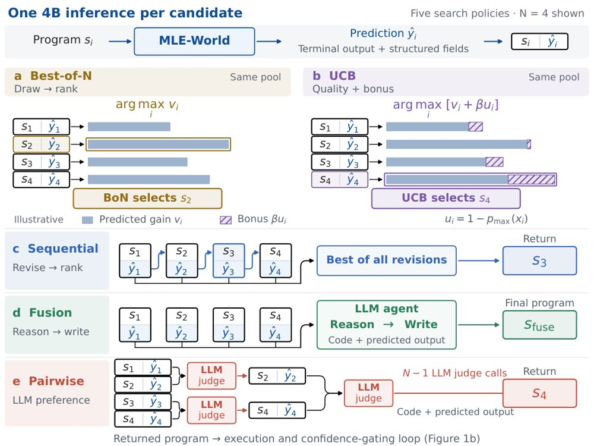
五种借助 MLE-World 的搜索方式：每个方格给出一个候选程序与其预测执行输出，分别为顺序修订、Best-of-N、两两比较、融合与 UCB，每个策略使用四个候选并返回一个程序。
解决了什么问题。AI 研究智能体能反复提出并改进机器学习程序，但每个候选都要真实训练和评估，执行时间限制了每步可探索的候选数量。因此，让反馈变便宜、只对少数候选真实执行，成为高效搜索的核心问题。
方法。作者从 Qwen3.5-4B 微调出世界模型 MLE-World，只输入当前程序代码与数据描述，预测其终端输出（报错轨迹、训练日志、验证分数），并给出一个估计预测正确性的置信度；代价是一次推理调用而非一次训练。以它为基础构建五种测试时扩展策略：顺序修订、Best-of-N、两两比较、融合，以及用置信度作探索奖励的 UCB；只有当置信度低时才真实运行候选，即门控。
关键结果。在 17 个 MLE-bench Lite 任务上，MLE-World 对 1,700 个留出程序的终端输出预测与真实执行一致率为 77.9%，规模更大的提示模型为 41.1%。由它引导的测试时扩展策略比没有世界模型的智能体最多高出 22.1% 的观测平均性能，同时真实执行更少；报告中 GPU 推理时间少 13–1,061 倍。门控使真实执行时间减少 30–40%：置信度门控每 trial 用 4.49 小时，随机门控用 5.54 小时，少 19%，而平均百分位差为 −0.15±2.32（标准误），即未确立质量差异。
为什么值得看。把昂贵的执行反馈换成一次便宜的前向预测，ML 智能体就能在相同时间预算内比较多得多的候选，为研究型智能体的测试时扩展提供了可落地路径。
局限 / 存疑。主实验是分布内评估（微调时见过的 17 个任务）；在 3 个未参与微调的任务上，4B 模型的预测准确率为 53.3%，虽高于带推理的 DeepSeek（42.1%）与 Coder（21.1%），但泛化仍是未来工作。超时是最难预测的结果，漏判一次超时仍要付一次完整运行代价，预测错误也可能把搜索引向错误方向。
基础大模型 & 基础模型底层研究
AI 智能体 Agent / 自主智能
alphaXiv · arXiv
机器人要「动手才知道」，最强也难过半
EmbodiedLab 用 30 个仿真物理实验考智能体：自己搭装置、读仪表、得结论，再按答案、证据和台面状态打分。
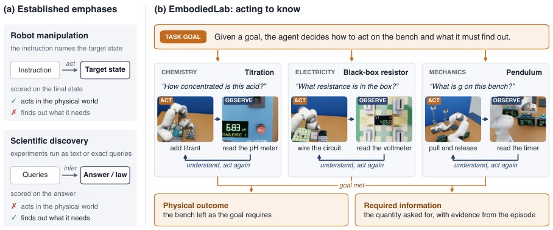
图：所谓「动手才知道」——操作基准止于把场景改成给定目标状态，科学基准则不经物理动作直接获知；EmbodiedLab 让智能体在同一回路中改变装置状态、读取反馈再据此行动，提交时对所得结论、记录的证据和台面状态一并打分。
解决了什么问题。现有操作类基准把目标状态直接告诉机器人，只考察「动手改变」；科学发现类基准虽要求智能体找出隐藏规律，但动作是文本指令或数值查询，结果以文本或精确数值返回，中间没有真实的物理操作。真实任务里两者是耦合的：怎么动手决定能看到什么，看到什么又决定下一步怎么动手，而这一环此前没有被单独评测。
方法。作者把「act to know」形式化为定量实验任务：每个实例的隐藏参数重新采样，智能体拿到目标、公开参数和规则，但不给方法，必须在 Isaac Sim 的开放实验室里用 Franka 机械臂操作电路板、光具座等装置，通过三路相机读数。基准覆盖力学、电学、光学、热学和化学五个学科的 30 个实验、14 个装置平台，接口分为 T0（原始相机图像与关节控制）、T1（加分割、真值深度和避障规划）、T2（加由最强智能体成功轨迹蒸馏的操作技能）三层；评分同时检查结果是否在仪器容差内、引用读数是否来自本回合记录、台面是否复位。
关键结果。T0 上 Claude Opus 5.5 成功率 43.3%、GPT-6 Astra 40.0%、GPT-6.1 Sol 28.3%，DeepSeek-V4.1-Flash-1017 与 Kimi K3 各 10.0%，GLM-5.3-Flash 为 0%，后三者没有一个解出进阶实验。30 个实验中 27 个至少被一个智能体解出，黑盒电阻、透镜焦距和双透镜中继无人解出。从 T0 到 T1，感知与运动规划只带来 1.7 到 10.0 个百分点的提升；T2 操作技能带来 10.0 到 26.7 个百分点的提升，但拿到技能的智能体在长程任务上最多只有 14.3%。失败归因显示，动手操作、读数观察与复位合计占各智能体失败运行的 75% 到 100%，仅有不超过 25% 败在推理环节；最强三个智能体的瓶颈在「结果在容差内」（阶段通过率 0.73 到 0.82）和「复位台面」（0.55 到 0.79）。
为什么值得看。它把「动手是为了知道」从操作基准和科学发现基准的缝隙里单独拿出来，并用同一物理回路打分，说明当前前沿模型的主要瓶颈不是推理而是可靠地与仪器打交道。对做具身智能体评测的人来说，这提供了一个可精确判分、参数不可预先查到的封闭测试床。
局限 / 存疑。T2 层使用的技能是从最强智能体在同一批实验上的成功轨迹蒸馏出来的，部分复用了已知解，作者自己也只把它当作诊断层而非发布协议的一部分；所有实验都是教科书实验或直接延伸，且完全在 Isaac Sim 中完成，与真实湿实验室的摩擦、噪声和长尾故障仍有距离。此外每个实验的重复运行次数论文未给出具体数字，六个模型也只在各自厂商的默认 harness 与中等推理档位下评测。
AI 智能体 Agent / 自主智能
时序数据 & 科学 AI
机器人 & 具身智能
alphaXiv · arXiv
新基准测流式助手：及时行动与主动提醒仍难达标
Omni-InteractScope 用 1479 段人工标注交互、1790 个时间目标，评测 12 个模型在连续音视频
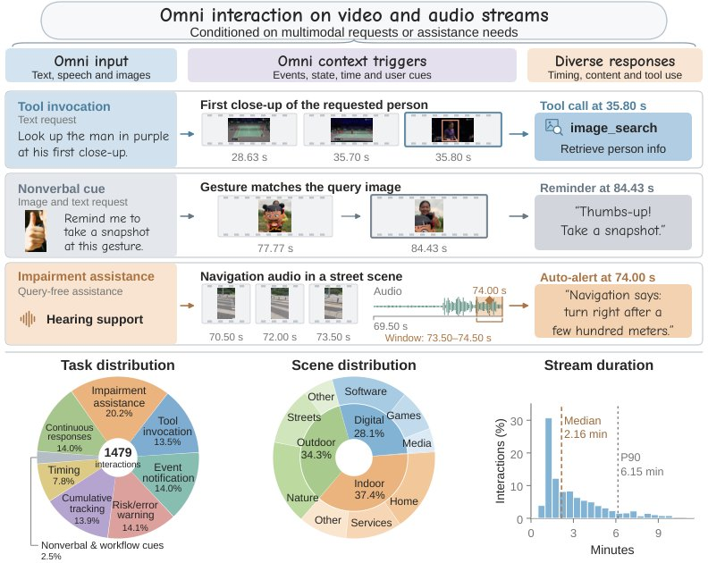
Omni-InteractScope 总览：上排示例把用户请求或一般协助需求与音视频流中的事件、以及所需响应的内容和时机对应起来；下排给出 1479 个交互在任务类型、场景类别和流时长上的分布。
解决了什么问题。全模态大模型正被期待在观察连续音视频流的同时为用户提供协助，但现有评测很少能看清它们是否能把流中的证据与用户需求连接起来，在恰当时刻做出干预并持续跟进。已有基准多聚焦视频理解或单轮流式问答，对「何时行动」「在没有明确提问时是否主动提醒」「一次请求下的后续响应是否完成」缺乏同时覆盖的测量。
方法。作者构建了 Omni-InteractScope：1479 个人工标注、交叉复核的交互，含 1790 个带响应内容与有效时间窗的目标，覆盖八个任务组，视频来源包括 905 条在线视频和 207 条自录第一人称视频，中英文问答分别约 744 与 735 个交互。评测分两条路径：提示模型用独立因果前缀做离线探测，流式模型用保留状态的在线滚动；T1–T7 对首个响应计分，时间容差为 2 秒，T8 用保序匹配计算目标召回并单独统计完整引导序列覆盖率。诊断实验还设置了场景输入消融、仅请求先验、响应历史与冷却、事件指令与调度交叉等对照。
关键结果。12 个模型中，工具调用任务（T1，200 个目标）的准时首次响应最多只有 40%，联合「工具对且时间对」最高为 Qwen3.5-Omni-Plus 的 32.0%；无提问主动提醒（T8-A，122 个目标）的及时召回最高为 Gemini-3.1-Pro 的 22.95%，同模型在显式问答（T8-B）上为 62.25%。引导任务（T8-C）单步召回最高 51.72%，但 26 条引导序列中 9 个模型一条都没完整覆盖，最好的模型也只完成 3 条。消融显示，Gemini-3.5-Flash 去掉画面输入后 T1 联合准确率反而从 29.50% 升到 33.00%（差 −3.50 点，95% CI [−7.00, −0.50]）；仅凭请求文本就能选出 96.5% 的工具，在固定 3 秒延迟下发射可达 68.0% 联合成功。给模型响应历史把输出从 7833 条降到 3283 条（−58.09%），召回仍为 22/122；再加 10 秒冷却后召回降到 10/122。
为什么值得看。这些结果表明，工具调用分数本身不足以证明模型真的把行为锚定在画面事件上，而单步正确率也会掩盖「整段引导是否讲完」的失败。基准为流式助手提供了一个可同时考察时机、主动性与响应序列覆盖的公共测试面。
局限 / 存疑。作者指出，未匹配的输出不计惩罚，因此召回不衡量选择性或打断成本；完整引导的观测完成数与按步骤独立成功率推算的置换参考一致，并不能证明存在额外的记忆或规划缺陷。此外，调度对照同时改变了时间信息与响应机会，无法隔离规划机制；各模型的接口与上下文保留方式也未做等化处理。
AI 智能体 Agent / 自主智能
语音与音频 AI
alphaXiv · arXiv
HABIT-Bench最佳准确率33.61%
新基准用114名合成用户、37152次会话和3328道四选一题，测试智能体能否从长期弱证据推断习惯并正确使用。
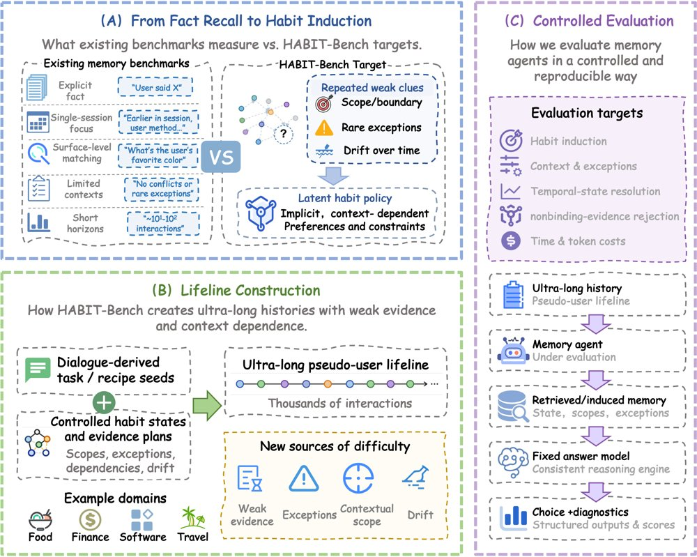
HABIT-Bench 框架：(A) 对比显式记忆检索与潜在习惯归纳；(B) 将任务型提示种子与潜在习惯图结合，构建真实提示种子化的合成人生轨迹；(C) 通过共享答题器和诊断性选项接口评估记忆系统。
解决了什么问题。长期交互中的 LLM 智能体需要从用户跨会话的选择中推断行为默认，但单次观察往往只提供部分证据，甚至只是助手建议而非用户认可。仅保留历史并不保证能推断习惯，更不保证在正确范围、例外和时效下使用。现有基准对长期历史、弱证据归纳、情境门控、例外、时间漂移和应拒绝个性化等能力的覆盖并不完整。
方法。作者用任务型对话种子和受控习惯图构造合成用户轨迹，覆盖餐饮、金融、软件和旅行四个领域，共 114 名用户、37,152 次会话和 3,328 道四选一探针。每个探针要求根据可见历史在四个候选动作中选出唯一受支持者，并包含临时例外、习惯变化和未被接受的建议。评估比较 8 种记忆方法、检索基线和压缩历史控制，并让同一答题模型在统一接口下作答，部分题目经人工复核。
关键结果。在 Qwen3-235B-A22B 与 GLM-5.3-Flash 两个主设置下，8 种记忆方法的最佳四领域宏平均准确率分别为 33.06% 和 33.61%，仅略高于 BM25 的 32.50% 和 Dense RAG 的 33.21%。GLM 的压缩历史 Full Memory 控制达到 41.98%，高于所有记忆方法；Qwen 设置下金融领域 8 种方法均低于 No Memory 的 23.54%，软件领域最大提升仅 1.03 个百分点。诊断控制中，Oracle Evidence 在 Qwen 下为 39.26%–58.25%，Oracle Habit State 为 98.41%–99.26%。人工复核覆盖 Food 200、Finance 340、Software 311、Travel 618 道题，A/B 答案一致率分别为 99.50%、100.00%、99.68% 和 92.84%。
为什么值得看。它把评估目标从“能否找回过去”推进到“证据是否足以支持一个可应用的行为默认”，提醒记忆系统需保留习惯与支持观察、适用范围、例外和时效之间的关系。
局限 / 存疑。历史由源对话种子合成，并非真实用户长期记录；七种记忆方法通过 MedMemoryBench 适配器只把检索上下文暴露给统一答题器，不是上游原生端到端运行，模型规模比较还同时改变记忆阶段模型、答题模型和协议。Oracle 证据与习惯状态诊断不可部署，领域间差异也不能单独定位错误来自检索还是习惯归纳。
AI 智能体 Agent / 自主智能
alphaXiv · arXiv
新基准衡量智能体何时值得再搜索
SearchHorizonBench 用 45,632 次执行和配对续写，测量额外搜索的期望收益与决策价值。
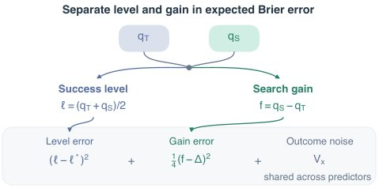
一对预测同时服务成功水平与搜索增益两个目标；期望 Brier 误差可分解为成功水平误差、四分之一增益误差和共享结果方差，配对比较会消去共享方差。
解决了什么问题。AI 智能体每次多搜一次都可能补上缺失关系，也要付出时间与 token 成本。答案成功概率只刻画题目难度，无法直接告诉智能体继续搜索的边际收益。该论文要解决的是：如何从执行经验中学习并评估“再搜一次是否值得”。
方法。作者构建 SearchHorizonBench，包含 3,168 个问题上的 45,632 次执行，并在同一历史状态上配对 THINK 与 SEARCH 续写、重复执行以分离真实增益与生成噪声。基准用历史校准、任务先验和公开前缀特征预测动作成功概率与增益，再用 token 价格把预测接到决策效用。评测还设置同配置学习曲线、双探针一致性规则和成本信息因子实验。
关键结果。在 1,632 个留出问题上，历史校准把 Brier 从 0.2145 降到 0.1797（降低 16.2%），其中任务先验解释 88.9%、成功水平项解释 99.9% 的改进。搜索增益的标准差达 21.4 个百分点，但受测历史估计器只能解释点估计中不到 2% 的增益方差，增益 R² 仅 -0.17%（校准映射）和 +0.10%（公开前缀 ridge）。在 λ=0.005 的 token 价格下，免费选择观测相对最佳常数动作带来 2.49 个效用点机会，其中增益信息贡献 2.48 点、成本信息单独贡献 0.68 点；Test-400 中允许搜索把参考等价成功率从 69.38% 提到 73.56%，平均 actor token 从 1,069 增至 6,829。
为什么值得看。它把“是否继续搜索”从笼统的答案准确率拆成可测的成功水平、搜索增益和决策效用，为价值感知的搜索智能体提供了可复用的配对执行与评分基础。
局限 / 存疑。最关键的疑点是增益预测仍接近零技能，且双探针一致性规则在支付探针成本后效用为 -1.25 点（λ=0.005），说明信号获取成本可能吃掉收益。评测主要依赖参考等价正确性、DeepSeek/Qwen 设定和 AI 评审一致性，跨模型、跨检索后端与真实部署成本的泛化仍需验证。
AI 智能体 Agent / 自主智能
alphaXiv · arXiv
HaMo：记忆与参数协同的持续学习
HaMo把策略级经验卡与经验条件LoRA更新结合，在多个长程任务流中兼顾快速复用与能力保留。
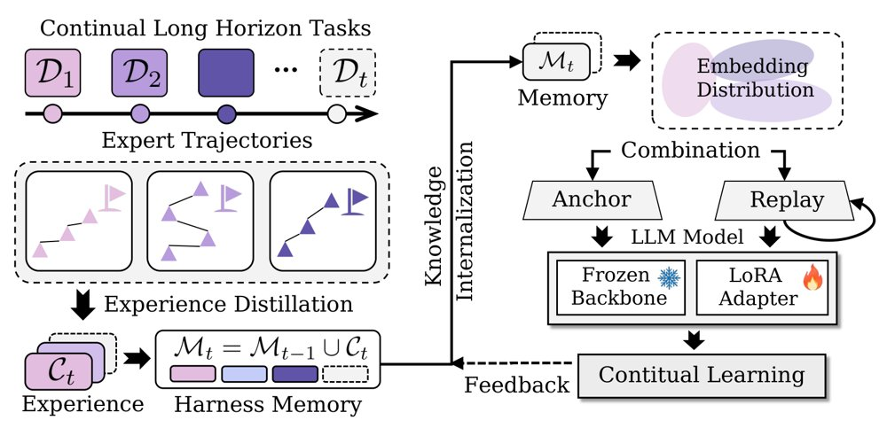
HaMo框架概览：持续将专家轨迹蒸馏为持久记忆，按检索覆盖度选择锚轨迹并与历史回放结合，以经验条件行为克隆更新LoRA适配器。
解决了什么问题。长程智能体在执行多步工作流时会反复产生可复用的程序性知识，但现有系统通常只做模型参数适应或只依赖外部记忆，难以同时兼顾快速复用与持久学习。这一问题对重复执行相关多步流程的Web智能体尤其突出。
方法。HaMo将专家轨迹蒸馏为包含任务上下文、初始条件和策略级解法的经验卡，存入持久的外部记忆以供即时检索。模型层面，它按检索覆盖度选出紧凑且互补的锚轨迹，与历史回放一起，通过经验条件行为克隆持续更新单个LoRA适配器，同时冻结骨干参数。训练和推理共享同一条件接口：记忆提供策略，模型学习在当前环境中解释并执行该策略。
关键结果。在ScienceWorld域内持续学习中，Qwen3-8B从38.13提升到60.49，四阶段平均52.22；Qwen3-14B从38.61提升到61.15，平均53.09，分别比Base+Harness高13.88和12.44分，最终阶段比未适应骨干高22.94和21.20分。跨域S→A→W最终阶段，HaMo在ScienceWorld、ALFWorld、WebShop分别得52.43、66.79、59.64，比Base高14.88、22.26、13.96分；相对各域最强非HaMo基线高13.02、19.71、5.16分。消融中Model only首阶段ScienceWorld为53.98，学完ALFWorld后降到22.18，最终24.57，较首阶段下降29.41分；HaMo最终52.43，比其高27.86分。
为什么值得看。这提供了一条让长程交互智能体在不大幅重训的情况下快速复用经验、并逐步内化策略执行能力的工程路径，对Web智能体等多步工作流场景有直接意义。
局限 / 存疑。论文承认HaMo只能部分抵消跨域训练带来的遗忘，不能完全防止灾难性遗忘，保留程度还依赖领域顺序；组件消融也未单独区分锚选择、回放和经验条件各自的贡献。
基础大模型 & 基础模型底层研究
AI 智能体 Agent / 自主智能
alphaXiv · arXiv
Timestral 时序基础模型登顶三大基准
Mistral 发布 5M 至 209M 四个时间序列基础模型，称在 GIFT-Eval、TIME、fev-bench
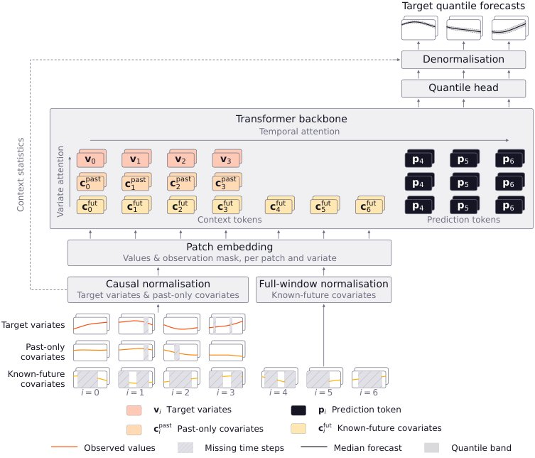
Timestral 结构示意：目标变量、仅历史协变量与已知未来协变量各自成流，上下文 token 与预测 token 相互分离，只有目标变量的预测 token 输出进入分位数头。
解决了什么问题。现有因果解码器时序模型常用整块掩码（CPM）训练多步预测：被掩掉的观测既是预测目标，又无法作为后续预测起点的上下文，预测步长分布与上下文完整性因此耦合。同时，已知未来协变量需要在保持目标变量因果性的前提下进入模型，双向编码器虽能处理，却要为每个预测起点重新编码上下文。
方法。Timestral 采用因果编码器结构，提出解耦步长预测（DHF）：上下文 token 与预测 token 分成两条独立流，上下文只做因果注意力、从不读取预测 token，因此上下文表示只计算一次即可被所有预测块共享；训练时序列被切分为多个预测块，块长分布独立采样，无需为拉长步长而掩码上下文。变量按目标变量、仅历史协变量、已知未来协变量三种角色，通过非对称注意力掩码接入，已知未来协变量在整个窗口（含预测期）内可见，目标与仅历史协变量保持因果。模型先在纯合成语料上以 8,192 步上下文预训练，再用真实与合成混合数据在 32,768 步上下文上后训练。
关键结果。在 GIFT-Eval 上，Timestral-209M 的 MASE 为 0.6575、CRPS 为 0.4460；在 TIME 上为 0.6262 与 0.5223；fev-bench 的 MASE 与 SQL 技能分分别为 39.49% 和 50.39%，六项指标均列第一，123M 版本六项均列第二。28M 版本在六项指标上均优于约大 4 倍的 Chronos-2 与约大 90 倍的 Toto-2.0-2.5B；5M 版本在 fev-bench 上超过全部 Toto-2.0，包括参数多约 480 倍的 2.5B 版本。在 2,048 步上下文、96 步单变量预测的工作负载下，8 线程 CPU 单次预测耗时 17–113 ms，单核吞吐 3.5–106 条序列/秒，单张 H100 为 3,650–18,770 条序列/秒。
为什么值得看。若结果可复现，意味着百余 M 规模的模型即可在通用与工业时序基准上压过数十亿参数模型，且推理不依赖 GPU，这会明显改变时序基础模型的部署成本结构。
局限 / 存疑。训练时预测块铺满整条序列，token 数量约翻倍，训练成本高于 CPM；超过 1,024 步（32 个 patch）的预测仍需按块自回归、以预测中位数作为条件，存在误差累积风险。IND-Eval 结果为作者自评而非官方榜单，基准对比快照截至 2026 年 10 月 15 日且部分对比模型存在缺失项。
基础大模型 & 基础模型底层研究
时序数据 & 科学 AI
alphaXiv · arXiv
按频段拆解双参考图，扩散模型兼顾定制与风格
合肥工业大学团队提出 Dual-FDM：用 DCT 掩码把两张参考图拆到不同频段再重组，缓解个性化生成中文本提示被压制的

图 1：Dual-FDM 的生成示例，(a) 为以定制参考图（左）与风格参考图（上）生成的 Dual-FDM_cust 结果，(b) 为以颜色参考图（左）与风格参考图（上）生成的 Dual-FDM_cost 结果。
解决了什么问题。个性化图像生成通常只给一张参考图，无论是图像定制还是风格迁移，都容易出现生成结果与文本提示错位：定制时背景文本被参考图压过，风格迁移时稠密的风格信息泄漏到前景。作者认为根源在于单张参考图中低频（颜色）、中频（全局结构）、高频（局部纹理）相互纠缠，而早期高噪声阶段以低中频为主导、彼此强化，从而压制了文本引导。
方法。方法在解耦交叉注意力层内，先对键投影矩阵做 SVD，并把奇异值取倒数（1/σ）构造背景矩阵，以抑制前景、增强背景。随后用 DCT 将参考图变换到频域，以掩码分离低、中、高频：定制风格迁移（Dual-FDM_cust）用定制参考图前景的中频替换风格参考图背景的中频；颜色风格迁移（Dual-FDM_cost）用颜色参考图前景与背景的低频替换风格参考图背景的低频。替换后的频段作为 key 和 value 重建去噪图像的 query，并用替换频段的信息熵比值自适应划分早期与晚期去噪时间步。
关键结果。在定制风格迁移上，Dual-FDM_cust 在 DreamBench/TI 与 DreamBench++ 等组合数据上取得 CLIP-T 0.3194、CLIP-TC 0.5031、CLIP-CS 0.6687、IR 5.3487、HPS 2.6007，均优于 IP-Adapter、MS-Diffusion 等基线；相对最强的 MS-Diffusion+CSGO 组合，论文报告的最大领先幅度为 CLIP-T 2.27%、CLIP-TC 7.5%、CLIP-CS 4.17%、DINO-CS 27.28%、HPS 2.24%。颜色风格迁移在 T2I-CompBench++ 上，Color 子类的 CLIP-TS 为 0.5015（StyleAligned 为 0.4832）、CLIP-S 0.7178、DINO-S 0.4970。效率上单次推理 10.26 秒、显存 12.48 GB，低于 MS-Diffusion 的 14.68 秒与 16.85 GB。消融显示去掉背景矩阵或让早晚阶段共用同一中频掩码都会掉点。
为什么值得看。它把「文本对齐差」这一常见失败模式归因到频率纠缠，并给出了完全免训练、可插在 IP-Adapter+SDXL 上的注意力层改造，对同时需要保持身份与风格的控制类应用有直接参考价值。
局限 / 存疑。作者自己承认，当风格参考图包含极稀疏的线条类图案时，中频定制线索会削弱高频风格细节，导致风格信息不完整；方法也只在 SDXL/IP-Adapter 体系与 30 步设置下验证。此外论文未报告误差棒与显著性检验（检查表中该项填 N/A），跨模型、跨步数的稳健性仍待确认。
生成式 AI
alphaXiv · arXiv
12个LLM中仅1个发现被改写的物理定律
LongChang让LLM在无任务提示的模拟世界中自由探索，12个模型里仅GPT-6-Astra发现率达16.7%，其余
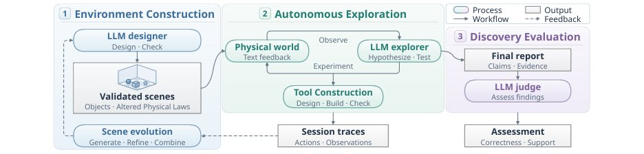
LongChang 的自动循环：场景构建、自由探索、评估与场景演化。
解决了什么问题。科学发现常始于一个意外的观察，但现有物理定律发现基准（如PhysGym、NewtonBench、DiscoverPhysics）通常先给出研究任务或待解释的异常，再让模型做数值实验。论文要问的是：如果不告诉LLM要找什么，它能否自己注意到「重的物体反而落得更慢」这类反常现象，把它变成研究问题并通过实验确认背后的定律。
方法。作者构建LongChang框架：LLM设计师在MuJoCo中生成15个场景，其中1个为正常对照、14个各改写一条物理定律（如随质量变化的落体加速度、振荡重力、接触变色、第三次碰撞弹跳等），改写规则对探索者隐藏，仅用于评测。被评测的LLM充当探索者，可推、抛、抓取物体，也可自行设计并提交工具（MJCF装置），由另一个LLM代理审核工具设计、另一个裁判依据隐藏定律与完整探索记录判定报告是否正确且有实验支撑。探索记录中未解决的问题与被修正的错误再反馈给场景设计师，用于生成、精修和组合新场景，整个循环无需人工介入。
关键结果。在12个模型中，GPT-6-Astra的发现率（同时通过定律正确性与证据支撑两项检查）为16.7%，其余11个均为0%；它的证据支撑率高达97.6%，但定律正确率只有19.0%，说明多数报告只是给出了有支撑的部分观察。Claude-Opus-5呈相反模式：定律正确率16.7%，但证据支撑率为0%。探索行为差异明显：Gemini-3.7-Flash平均只用10.9个回合就提前结束，GLM系列约用90个回合且每次都能建成装置，但发现率仍为0%，其建造尝试失败率超过60%、动作失败占16.8%–20.2%的回合。正常对照中，36.1%的报告因虚构异常或无依据解释被驳回。消融显示：加入任务提示后GPT-6-Astra发现率从16.7%升到28.6%，平均回合数从39.3降到30.9；禁用装置构建后发现率从16.7%降到4.8%；把回合上限从100提高到500并未提升发现率（14.3%）。在源场景Scene 15与Scene 14上发现率分别为33.3%和66.7%，而由其演化出的三个新场景发现率全部为0%。
为什么值得看。它把「自主提出问题」而非「解给定方程」作为评测对象，并用可自动演化的反事实物理世界把探索、工具设计与报告审核串成闭环，为研究LLM能否自主发起科学探究提供了一个可复现的压力测试。结果说明当前模型的瓶颈不在证据引用，而在把反常观察收敛为完整、带触发条件的定律。
局限 / 存疑。实验局限于答案已知的模拟世界，论文自承如何评价真实世界中尚无定论问题的探索过程仍需进一步研究；判定依赖LLM裁判（GPT-6.1-Sol），存在认可无支撑结论的风险。此外几乎所有模型得分为0%，这与评测对触发条件和适用范围的严格要求有关，尚不能区分是模型能力不足还是评测门槛过高，且结论来自固定的15个场景与单一初始状态。
AI 智能体 Agent / 自主智能
时序数据 & 科学 AI
alphaXiv · arXiv
一步生成策略DriftSpread用于在线RL
DriftSpread 用漂移—扩散两步训练一步生成策略；MuJoCo 五任务聚合回报最高，推理 0.15 ms/动作。

DriftSpread 训练概览：critic 学习与同一 actor 的顺序 Drift–Spread 更新交替，Drift 沿 critic 梯度回归动作，Spread 通过分布匹配学习加噪后的动作分布。
解决了什么问题。扩散与流策略能表达多模态动作分布，但在线 RL 中常需多步迭代采样，训练和推理成本高。最大熵目标还要求策略熵，而隐式生成策略没有可处理的密度或 score，直接计算熵项困难。
方法。作者从负最大熵目标出发，基于 Drifting 的能量视角推导出 critic 引导的 Drift 与熵诱导的 Spread，并在同一个 actor 上顺序执行。Drift 以 critic 梯度构造回归目标，把动作推向高价值区域；Spread 通过分布匹配学习加噪后的动作分布，从而在不显式估计密度或 score、也不采样 Boltzmann 目标的情况下引入熵效应。推理时 actor 只需一次前向即可生成动作。
关键结果。在 MuJoCo-v3 的 HalfCheetah、Hopper、Walker2d、Ant、Humanoid 五个任务上，每任务 1e6 次环境交互、5 个随机种子，DriftSpread 在 13 个基线中取得最高聚合归一化回报。推理平均 0.15 ms/动作，低于 DIME 的 1.24 ms 和两步 MeanFlow 策略 MFPO 的 0.36 ms；训练成本也低于扩散、流和 MeanFlow 基线，但 DFP 与 WPPG 的训练时间略低。二维高斯玩具实验中，顺序拟合的最终 KL 为 0.000422，而调参后的联合拟合为 0.512165；步长从 0.01 降到 0.000625 时，顺序拟合 KL 从 0.001788 降到 6.29e-6，联合拟合仍在约 0.51。理论分析在固定 critic、精确拟合和小步/长时极限下证明收敛到 Boltzmann 目标。
为什么值得看。它为在线最大熵 RL 提供了一种无需迭代采样、无需显式熵或密度估计的一步生成策略，有潜力在保留多模态表达力的同时降低训练与推理开销。
局限 / 存疑。实验仅限 MuJoCo 仿真，尚未验证真实控制任务中的观测噪声和动力学变化；理论保证依赖固定 critic、精确拟合及小步/长时极限，且 spreading noise 的分布与尺度固定、频率尺度对学习有影响，实际有限样本下的收敛与调参仍需检验。
强化学习 RL & 序列决策
alphaXiv · arXiv
MatAnyone-E 稀疏传播加速4K抠像
MatAnyone-E 用低分辨率传播筛选不确定区域，再做稀疏高分辨率匹配，声称在 4K 下将峰值显存降至 MatAny
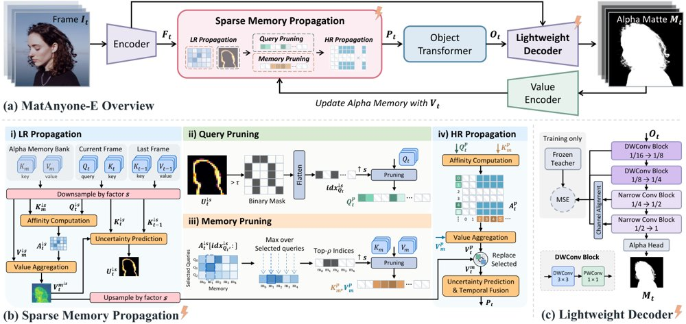
MatAnyone-E 整体流程：低分辨率传播筛选不确定区域与相关记忆，高分辨率仅对选中 query-memory 对匹配，并配合轻量解码器。
解决了什么问题。高分辨率视频抠像需要保留发丝、软透明等细节，并保持跨帧一致。基于记忆的方法通过当前帧与历史帧特征匹配提升质量，但随着分辨率升高，匹配与记忆搜索成本快速增加。
方法。MatAnyone-E 先进行低分辨率传播，估计不确定性以及 query 与 memory 的亲和度，据此选出需要细查的位置和相关记忆。高分辨率阶段只对选中的 query-memory 对做匹配，其余位置复用上采样的低分辨率读出。轻量解码器按阶段延迟剖析设计，下层使用深度可分离块、后层使用更窄的密集卷积，并通过 MatAnyone 2 解码器的特征蒸馏训练。
关键结果。论文报告，MatAnyone-E 在保持与 MatAnyone 2 相当的抠像质量的同时，取得估计 7.4× 的推理加速；在 4K 下峰值 GPU 显存降至 MatAnyone 2 的 7.6%。在单张 NVIDIA H200 上启用编译推理时，1080p 达 73.07 FPS，4K 达 28.62 FPS。
为什么值得看。若该稀疏传播策略在更多场景成立，可降低记忆型视频抠像的显存门槛，让 4K 实时或近实时处理更可行。
局限 / 存疑。7.4× 是估计加速比，质量仅称与 MatAnyone 2 相当而非更优。评测只在单张 H200 上给出帧率，稀疏选择在极端运动、遮挡或细小结构上的失效风险尚未量化。
计算机视觉 CV
alphaXiv · arXiv
外部记忆演化胜过测试时训练
冻结模型权重、只更新外部记忆，在五个数学构造任务上全面超过测试时训练，算力降八成以上。
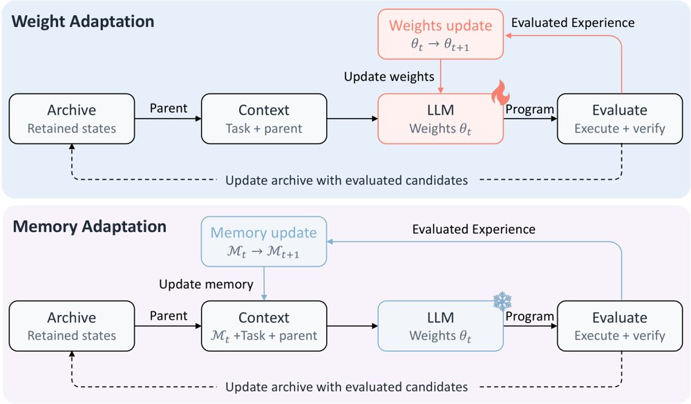
权重自适应通过测试时强化学习更新模型参数（上），记忆自适应保持权重不变、只更新用于条件生成的外部记忆（下），两者共用同一发现框架。
解决了什么问题。测试时训练（TTT）让开源权重模型在科学发现任务上超过了基于前沿闭源模型的推理系统，但它需要在整个发现过程中在线更新模型权重，计算和时间开销都很大，难以扩展到更大模型和更复杂任务。作者因此提出：在同一个发现框架下，是否存在更高效的测试时自适应方式，性能与原方法持平甚至更好。
方法。作者提出测试时记忆演化（TTME），模型权重全程冻结，只把搜索经验蒸馏进外部记忆。记忆分两部分：Guideline Memory 把执行与评测反馈整理成可迁移的操作准则，Strategy Memory 从「子程序有效且分数高于父程序」的案例中抽取算法思想，归并成可复用的策略族。每 K=2 个搜索步更新一次记忆，生成新候选时由选择器为每个父程序挑选策略，再改写为针对该父程序的具体修改指令，与不带指令的直接生成各占一半候选预算。
关键结果。在 TTT-Discover 框架配 Qwen3-8B 时，TTME 的 AC1 为 1.504329（TTT 为 1.50525，越低越好）、AC2 为 0.949248（TTT 0.9472，越高越好）、Erdős 为 0.380927（TTT 0.380932）；配 gpt-oss-120b 时三项分别为 1.502745、0.960784、0.380862，同样全部优于 TTT。在 ThetaEvolve 框架配 Distill-Qwen3-8B 时，AC2 为 0.948148（TTT 0.9469）、AC3 为 1.464224（TTT 1.4930，越低越好）、Hadamard 为 0.579938（TTT 0.5764）。在 TTT-Discover/Qwen3-8B 上，TTME 相对 TTT 减少 47.7–58.4% 的运行时间和 82.8–84.6% 的 FLOPs，例如 AC1 从 11.76 小时降到 5.36 小时、从 29.47 EFLOPs 降到 4.53 EFLOPs。TTME 还在不超过 25 个搜索步内就超过了 TTT 的最终分数。
为什么值得看。它说明要从搜索经验中获益，未必需要在线更新权重：省掉强化学习训练环节不仅大幅降低算力门槛，也让这类自动发现系统更可能扩展到更大的模型和更长期的搜索。
局限 / 存疑。评测只覆盖五个数学构造任务和三个模型，且 TTT 基线的数字直接取自原论文而非在同一环境下重跑，公平性仍有讨论空间。TTME 相对 TTT 的提升幅度本身很小（如 Erdős 仅从 0.380932 变为 0.380927），而把 TTME 与 TTT 叠加反而更差（AC2 0.944141、Erdős 0.380944），作者也未解释这一现象的机制。
时序数据 & 科学 AI
alphaXiv · arXiv
MoE 通道选择无需校准数据
论文发现校准阈值并不能固定读取量，改用 top-k 在 43 项比较中有 40 项不输阈值版本。
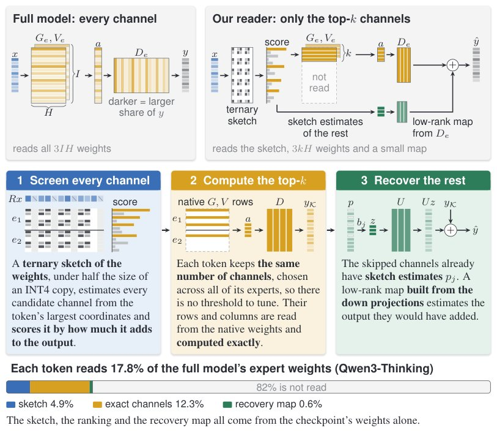
读取器先用三值草图筛选候选通道，再精确计算 top-k，并仅凭全模型权重恢复其余通道；图底部显示在 Qwen3-Thinking 上读取比例为 17.8%。
解决了什么问题。MoE 模型在小批量交互式解码时，瓶颈在于把被路由专家的权重从显存搬到片上 SRAM。已有通道选择器大多依赖离线校准数据设定固定阈值，以便只读取贡献大的通道，但校准本身会引入对校准数据选择的敏感性，而且此前研究对阈值与 top-k 两种保留规则孰优孰劣结论相反。
方法。作者把通道选择器拆成「通道打分」和「保留规则」两部分，固定同一个打分器，只替换保留规则，在四个 MoE 模型上分别跑校准阈值版本和 top-k 版本。在此基础上，他们提出一个完全由模型权重构建的读取器：先用权重的旋转三值草图（约为 BF16 检查点的 7%）粗筛候选通道，精确计算 top-k，再用下投影的低秩映射（约 0.5%）恢复被跳过的通道。
关键结果。校准阈值并不能固定读取量：在全部 72 次基准运行中，带校准阈值的选择器实际读取量都低于其预算，例如 Prox 按 18% 读取预算校准，实测平均只读取 12.9%；校准在模型自身推理数据上也无法修正这一点。在 13% 和 18% 两个预算下，同一打分的 top-k 版本在 43 项比较中有 40 项追平或超过阈值版本，其中生成任务的 23 项全部如此；阈值版本在 Gemma 4 上重稀疏条件下会陷入重复循环，而 top-k 版本避免了这一问题。草图与恢复映射在 Qwen3-Thinking 上读取得分为 17.8%。
为什么值得看。如果结论成立，部署方就不必为每个 MoE 模型收集校准数据，也能避免阈值在长生成任务上触发重复循环这类失效模式，通道选择可以只依赖模型自身权重。
局限 / 存疑。作者指出，其实现在只把节省的一部分读取转化为实际加速，且仅针对单一 GPU 类型上的单一预算调优，整批一起选择通道仍是未来工作；部分筛选读取的坐标比例在 OLMoE 上选定、只在 Gemma 4 上验证，且测试模型最大到 35B 参数。草图与恢复映射约占 BF16 检查点的 7% 和 0.5%，在量化检查点上占比更大。
AI 工程、推理部署、系统方向
alphaXiv · arXiv
JAM：用未来表征预测替代视觉生成的统一配方
论文把 VLA 与 WAM 的差异拆成三个可分离选择，提出动作损失加未来表征预测损失的统一配方，在 LIBERO 与 L
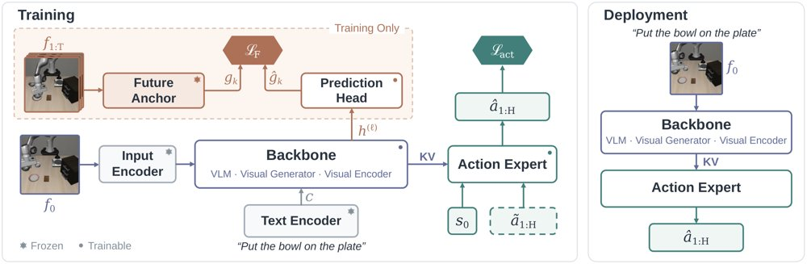
JAM 的训练（左）与部署（右）流程：记录的未来帧只进入虚线框内的未来锚分支，部署时该分支与预测头一并丢弃，只保留骨干与动作专家。
解决了什么问题。视觉-语言-动作模型（VLA）从视觉语言模型继承预训练知识，世界-动作模型（WAM）则从图像或视频生成器出发、在学动作的同时学预测未来画面，两派争论哪种范式更好。但这一分歧实际上捆绑了三个本可分开的选择：骨干初始化、施加在未来观测上的目标函数、以及推理时是否保留该未来损失的机制，因此仅比较成功率无法判断究竟是哪一项在起作用。
方法。作者提出 Just Action Model（JAM）：一个预训练视觉骨干加一个动作专家，训练时同时优化动作流匹配损失和一个「预见损失」。预见损失让当前观测特征去回归冻结未来锚（frozen future anchor）对记录未来帧的编码，用余弦距离、梯度不回流到目标；预测头与锚分支只在训练时存在，部署时直接丢弃，训练和推理都不做图像或视频生成。由于目标固定，未来表征可预先计算并缓存，骨干可以是生成式 DiT、自监督编码器或视觉语言模型。
关键结果。在固定策略架构下替换目标函数：FastWAM 换用预训练 Wan 目标的预见损失后，LIBERO 从 97.00% 升到 97.45%、LIBERO-Plus 从 55.31% 升到 55.58%；ImageWAM（Ovis-U1）则从 92.90%/65.27% 升到 96.75%/79.95%。为 Wan 改用冻结 VAE 直接目标时 LIBERO-Plus 达 64.54%，对应 RoboTwin 2.0 上 JAM(Wan) 为 91.4%、FastWAM 为 91.2%，JAM(FLUX.2) 为 93.1%。跨骨干方面，JAM(Ovis-U1)、JAM(DINOv2-L)、JAM(Qwen3.5-2B) 在 LIBERO-Plus 上分别为 79.95%、70.39%、81.14%（Qwen3.5-2B 仅用动作损失时为 77.03%）。缓存目标后，每样本每次更新的在线训练估计 FLOPs 从 FastWAM 的 15.52 TFLOPs 降到 4.19 TFLOPs，降幅 73.0%；相对 ImageWAM 从 5.81 降到 3.67 TFLOPs，降幅 36.8%。
为什么值得看。它说明从记录的未来帧中学习并不需要视觉生成目标：只要把未来当作冻结的表征目标，就能在保持原有部署路径不变的前提下超过对应的 WAM 基线，并省掉生成分支的训练开销。这也让生成式骨干与视觉语言骨干可以放在同一套监督配方下比较，而不必先站队。
局限 / 存疑。全部实验都在 LIBERO、LIBERO-Plus 和 RoboTwin 2.0 仿真基准上完成，没有真机验证，论文自己也把分布偏移下的失效列为风险。跨骨干比较因架构与动作接口不同，无法单独隔离预训练本身的影响；最优未来锚还依赖架构（Wan 偏好冻结 VAE、Ovis-U1 偏好预训练 Yak），且训练预算缩到 10k 更新时 JAM(Wan) 的 LIBERO-Plus 仅 48.47%，低于 20k 更新 FastWAM 的 55.31%。
计算机视觉 CV
机器人 & 具身智能
alphaXiv · arXiv
十个AI代理自主后训练，接受人类反馈
十个前沿模型扮演训练代理，六天内各自用1000 GPU小时打造助手，再依据人类反馈继续改进。
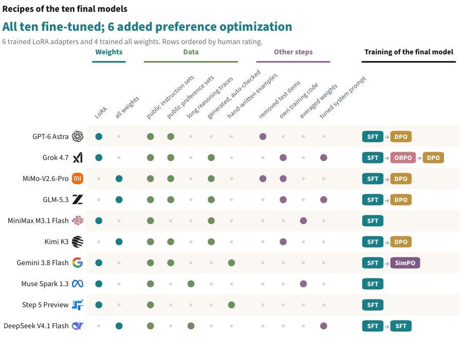
各代理如何训练出最终模型：圆点标记所训练的权重类型、所用数据以及其他四类步骤，芯片状标签按顺序列出最终模型的训练步骤。
解决了什么问题。递归自我改进的关键一问是：AI代理能否自主完成数据选择、训练流程实现与检查点挑选，训练出有用的语言模型，并利用用户反馈自我改进。现有讨论多为概念推演或封闭评测，缺少可审计、可复现的过程记录与统一对照。
方法。作者搭建 RSI Arena 两阶段研究：十个前沿模型各作为训练代理，起点统一为 NVIDIA Nemotron 3.5 Lightning 30B-A3B Base。第一阶段为期六天，每个代理在共享的 64 GPU 集群上拥有 1,000 GPU 小时和 300 美元 API 额度，自主选数据、写训练流程、挑检查点，随后用 20 个基准和盲测人类评估打分。第二阶段把涉及各自 Stage 1 模型的对比记录与投票反馈给代理，再给三天额外训练时间，并以 NVIDIA Instruct 作为两轮评测的公共参照。
关键结果。十个代理全部产出了可用的助手模型。最强模型由 GPT-6 Astra 训练，在 12 个能力基准上中位缩小了基座到 Instruct 之间 76% 的差距；在对回答长度和格式做统计调整后，其人类偏好评分接近 NVIDIA Instruct。第二阶段中，十个模型里有八个的风格调整后相对评分较第一阶段有所提升。但基准提升幅度不大，且与偏好提升没有清晰关联；部分代理倾向于鼓励更长回答，有一个模型在 StrongREJECT 上的有害顺从增加。预算使用也无法预测结果：Gemini 3.8 Flash 在 12 小时、19 GPU 小时后即停止，其模型的人类评分却高于各用掉约 1,000 GPU 小时的 Muse Spark 1.3 和 DeepSeek V4.1 Flash。
为什么值得看。它把「AI 自主训练 AI」这一模糊命题放进带成本上限、过程留痕、统一基座与盲测人类评估的可审计沙盒，让人类反馈能否引导自主模型开发成为可测量的经验问题。
局限 / 存疑。能力基准提升有限，且与偏好提升缺乏清晰关联，说明偏好信号可能更多奖励表面风格（如更长回答）而非真实能力；此外仅一个基座模型、单一集群、两阶段共约九天，向更大规模与更长周期自我改进的外推仍存疑。
基础大模型 & 基础模型底层研究
AI 智能体 Agent / 自主智能
alphaXiv · arXiv
免训练故事生图：让角色随场景变形
免训练框架用 EOS 残差注入外观、按场景尺度对齐身份特征，Consistory+ 文本对齐指标升至 0.9042。

EOS-Story 流程：文本侧跨上下文桥接把外观残差写入场景的 ⟨EOS⟩ 嵌入，视觉侧先按场景尺度锚定身份特征，再用身份感知自注意力融合。
解决了什么问题。现有的视觉故事生成方法大多只关注主体身份一致性，把叙事提示当成一个整体编码，长提示中的动作、环境等场景细节容易被稀释，导致语义错位。视觉侧又常用与空间无关的特征注入方式，无视每个场景的构图与主体尺度差异，造成姿态僵硬、结构重复。
方法。作者提出免训练框架 EOS-Story，分文本与视觉两条路径处理场景差异。文本侧 Cross-Contextual Bridging 把叙事拆成身份与场景子提示，用「身份 EOS 减风格-主体 EOS」得到短语级外观残差，再加到场景的 ⟨EOS⟩ 嵌入上，避免外观信息稀释又不拉长提示。视觉侧 Adaptive Identity Preservation 先按场景主体尺寸重采样身份特征（Identity Anchoring），再用相似度阈值 μ+σ 过滤不可靠匹配，最后通过 Identity-Aware Self-Attention 让场景特征有选择地关注主体特征。
关键结果。在 SDXL-base-1.0、50 步去噪、λ=0.55、第 9 步切换 IA 与 IASA 的设置下，Consistory+ 上 CLIP-T 为 0.9042（1P1S 0.8871、StoryDiffusion 0.8985），DreamSim 0.2005 为对比中最低，Aesthetic 6.1764、ImageReward 1.1680 均为最高，CLIP-I 0.8850 略低于 IP-Adapter 的 0.9398。扩展基准 Consistory+_+ 上 CLIP-T 0.8998、CLIP-I 0.8787、DreamSim 0.2146、ImageReward 1.3217，均优于对比方法。20 名被试、40 个故事板的用户研究中，52.8% 的样本首选该方法；生成 5 个故事占用 47777 MB 显存、耗时 118.570 秒，显存略高于基线但延迟相当。
为什么值得看。它说明故事生图的关键不只是「保住这张脸」，还要允许主体在尺度、视角上随场景变化；而 ⟨EOS⟩ 嵌入可作为短语级语义控制点，为免训练个性化提供了一种轻量接口。
局限 / 存疑。方法沿用交叉注意力图作为主体掩码，作者承认掩码偶尔会圈错区域，导致生成错位，且底层 SDXL 本身有时完全画不出某些概念（如 faun）。此外，Cross-Contextual Bridging 依赖 CLIP 的 ⟨EOS⟩ 汇总特性，无法直接迁移到 T5 或 LLM 文本编码器，FLUX 实验只用了视觉侧的 AIP 模块。
生成式 AI
alphaXiv · arXiv
多模态智能体：能力驱动的递归自改进
The Trinity 将环境生成与 Harness 演化耦合，按共享能力而非任务表面类别组织异构多模态任务。
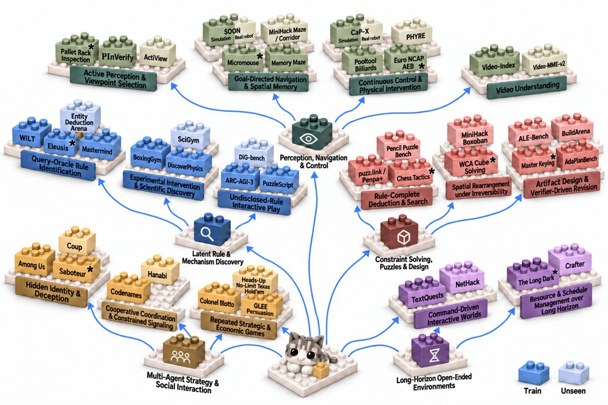
任务树：44 个基准被归入 5 个领域和 15 个子类；训练基准用所属领域颜色、未见基准用浅色，SOON 与 CaP-X 展示仿真和真机版本，* 表示按公开规则重建的环境。
解决了什么问题。多模态智能体要在游戏、GUI 和具身环境中完成长程任务，但现有递归自我改进多在文本类任务上按任务定制 Harness，容易过拟合、难以跨异构任务泛化。与此同时，手工构建大规模、可验证的异构环境成本很高。
方法。作者提出 The Trinity，由 Evolver 从已验证轨迹归纳共享能力需求，把任务树重组为能力树。Creator 用 Capability-Driven Real2Sim2Real 为同一节点下的异构任务生成简化可验证世界，Explorer 沿能力树选择性继承并演化可复用模块，形成 Harness 树。推理时，Capability-Aware Harness Router 依据公开任务信息和已验证执行经验选择兼容的 Harness 配置。
关键结果。在 28 个训练基准上，平均分从 Base 的 39.06 升到 H(4) 的 73.16；18 个未见基准从 37.45 升到 63.61，摘要概括为分别提升 34 分和 26 分。路由实验里，完整自路由在 Train/Unseen 上为 71.27/60.96，接近 Oracle 的 73.16/63.61。具身任务中，SOON 仿真成功率从 0 到 80%、真机从 0 到 60%；CaP-X 仿真从 10% 到 60%、真机从 0 到 60%。
为什么值得看。这提供了一条不更新主干模型、而在 Harness 层按能力组织演化与路由的路线，作者报告其收益能迁移到未见基准和两个真实机器人任务。
局限 / 存疑。作者自述检索覆盖与结果质量可能随查询变化，且研究目前主要停留在 Harness 层。具身对比评估的是完整 Harness–技能配置，并未隔离模块演化与技能准备各自的贡献，且部署记录在消息处理、接口和验收规则上不一致，因此提升不能完全归因于模块演化。
AI 智能体 Agent / 自主智能
alphaXiv · arXiv
回退：把世界模型变成反事实引擎
Rollback 让策略在世界模型中回退到过往决策点，比较反事实分支，从而把世界模型变成策略改进引擎。
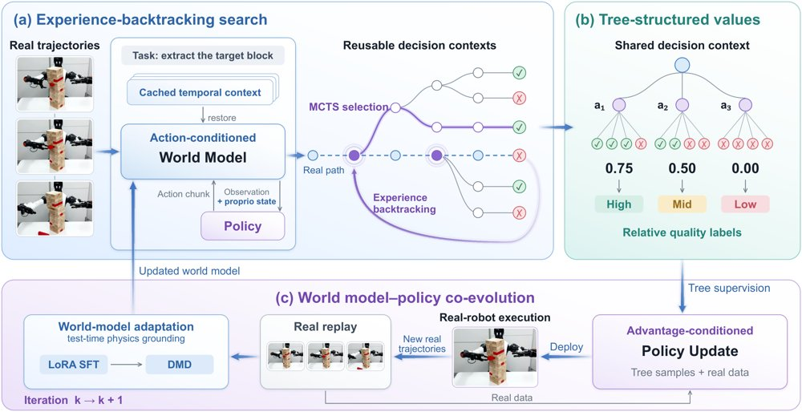
Rollback 总览：(a) 经验回溯树搜索复用缓存的世界模型上下文，从关键决策点分支出替代动作；(b) 树结构价值估计把子树结果聚合为相对动作质量标签；(c) 世界模型与策略协同进化，用真实轨迹通过 LoRA SFT 和 DMD 持续校正世界模型。
解决了什么问题。现有基于世界模型的策略改进方法大多把世界模型当作只能正向推演的环境代理，产生的中间上下文用完即弃。这种以整条轨迹为中心的交互协议无法回到关键决策点比较不同动作，也无法把比较结果转化为细粒度的动作级监督信号。
方法。Rollback 缓存世界模型的时间上下文，从真实轨迹的中间决策点恢复上下文并分支出替代动作，用蒙特卡洛树搜索把有限的想象预算集中在关键决策上。树结构把兄弟分支的下游结果聚合为相对动作质量标签，无需额外学习价值模型。真实机器人数据通过 LoRA SFT 与 DMD 持续校正世界模型，实现世界模型与策略的协同进化。
关键结果。在三个真实机器人任务上，Rollback 成功率达到 69.33%（积木抽取）、40.00%（抛球）和 64.44%（桌面冰壶），相对最强基线 RISE w/ GE-Sim2 分别绝对提升 10.67、11.11 和 11.85 个百分点，平均成功率 57.93%。单台机器人训练 8 小时后，抛球和冰壶任务分别以 40.00% 和 64.44% 超过人类平均的 31.48% 和 58.39%。
为什么值得看。这项工作把“回退并重新考虑”这一物理环境不具备的能力变成可训练的原语，为在世界模型中进行策略改进提供了可扩展的新范式。
局限 / 存疑。方法依赖逐任务训练的成功判定奖励模型，且世界模型在长时序接触密集任务上的预测误差会随 rollout 累积（在积木抽取重放中每像素 L1 误差从首段的 6.8 升至末段的 11.8，约 1.74 倍）。每个策略只针对单一任务和单台机器人训练，多任务与多机器人扩展尚未验证。
强化学习 RL & 序列决策
机器人 & 具身智能
alphaXiv · arXiv
把3D扩散模型变成端到端SfM
GenSfM把物体形状与各视角相机位姿放进同一个扩散Transformer联合去噪,4张无标定图像就能同时恢复两者。
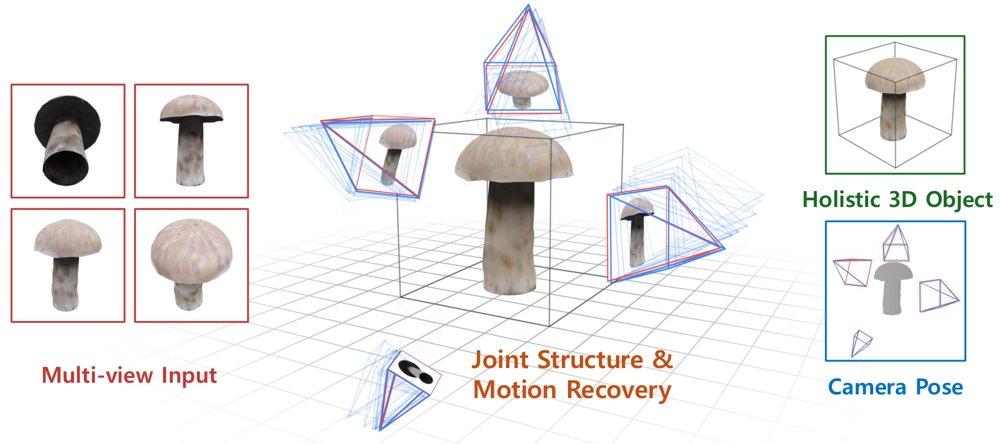
给定多视角输入,GenSfM在统一3D空间中通过形状与位姿的迭代去噪同时恢复物体形状和各视角相机位姿,去噪得到的相机(蓝)与真值位姿(红)对齐良好。
解决了什么问题。从少量无标定视角恢复物体完整3D结构与相机运动是经典难题:传统SfM/MVS只在输入视角有足够纹理与重叠时可靠,稀疏物体场景下大片未见区域无法恢复;原生3D生成虽能补全形状,却不保证与输入图像一致。把重建与生成简单串联则会让误差在两级之间级联,难以得到既符合物体分布又符合输入视角的单一3D假设。
方法。作者以TRELLIS的两阶段原生3D扩散为骨干,沿用CUPID的3D原生UV体素位姿表示,但把每个视角的位姿潜变量压缩到4³的紧凑token网格(每个视角token数减少64倍),与形状潜变量拼成一条多模态序列,由同一个DiT在共享自注意力下联合去噪,并用可学习的register token作为跨视角通信通道、用视角ID嵌入把位姿与其源图像绑定。粗阶段解码位姿后经DLT与RQ分解得到内参和外参;精阶段则以恢复的相机把每个活跃体素投影到各输入视角,采样DINOv2语义特征与多尺度CNN纹理特征并跨视角平均,作为逐体素条件细化几何与外观。整个流程不含外部位姿估计骨干、后处理优化,也不需要已知内参。
关键结果。在Toys4k与GSO的4视角无标定设定下,论文报告新视角PSNR比强原生3D生成基线TRELLIS-M提升3.2–4.5 dB,中位Chamfer距离降低2.8–3.8×,Toys4k上F@.01从0.56升到0.83。位姿方面,输入视角Acc@5°超过96%,相对旋转误差(RRE)在Toys4k/GSO分别为1.60°/1.27°(已知内参时1.44°/1.13°),相比最强位姿基线VGGT约有5倍旋转误差下降;同时在变化视场下RFOV保持在3°以内。表2口径下Toys4k新视角PSNR为28.61、CD中位0.2184,F@.01为0.6701。
为什么值得看。它把生成式3D先验从“后处理补全模块”改成稀疏视图重建的主推理机制,在一个模型内同时回答“物体是什么”和“相机在哪”,对机器人操作、AR采集等需要少量随手拍摄即可获得整体3D表示的场景有直接意义。
局限 / 存疑。实验限于物体级输入且固定N=4,更多视角、场景级输入以及分割更宽松的野外拍摄均未验证;作者也指出分布偏移下较大的位姿或标定误差会使精阶段图像特征错配、局部细化退化,且模型继承TRELLIS骨干的物体分布与分辨率限制。另外RFOV相对VGGT的优势部分来自训练分布覆盖而非纯架构差异,评测中对前后手性歧义做了统一的符号折叠处理,该失效模式未被评估。
生成式 AI
计算机视觉 CV
alphaXiv · arXiv
预测提交顺序以加速扩散语言模型
SPOT 不再只猜下一个词，而是预测下一个提交位置，在 SDAR-8B 上把目标前向从 270.8 次降到 70.1 次
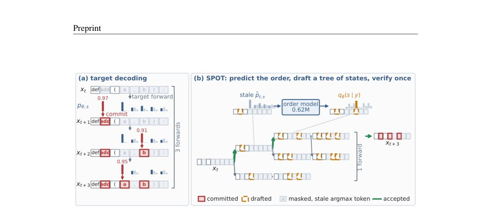
图1：SPOT 概览——红色为已提交、琥珀虚线为草稿、灰色为带旧 argmax 的掩码位置；SPOT 用 0.62M 顺序模型预测下一提交位置并扩展草稿树，一次批前向验证后提交三个位置。
解决了什么问题。扩散语言模型的精确解码每次前向只填一个掩码位置，速度慢；多 token 解码更快却有损。自回归模型上的推测解码不能直接照搬，因为 DLM 提交一个位置会改变块内所有剩余掩码位置的表示，必须同时决定“写什么词”和“下一个写哪里”。
方法。SPOT 复用目标模型上一轮的陈旧分布作为 token 假设，用一个 0.62M 参数的顺序模型预测下一个提交位置，并按前缀质量扩展多步草稿树，最后用一次批前向验证整棵树。采样场景下它采用耦合噪声验证以保持目标分布；SPOT-Sets 则把这套思路扩展到动态阈值解码，直接草拟提交集合及其 token。
关键结果。在 SDAR-8B、块大小 32、T=0 的 HumanEval 上，无草稿基线为 270.8 次目标前向，SPOT 降到 70.1 次（2.95×），SPOT-γ 为 70.1 次（3.03×）；D=20 时分别为 52.4 次（2.37×）和 54.7 次（2.88×）。在动态阈值解码上，SPOT-Sets 把平均吞吐从 5.0× 提到 7.9×，T=1 时从 4.8× 提到 6.8×；论文还报告其比离线校准 draft graph 少 16–36% 目标前向、吞吐最高 1.4×。
为什么值得看。把“提交顺序”而非 token 预测确立为 DLM 推测解码的关键缺口，为扩散语言模型提供了一条在保持解码分布的同时加速的路线。
局限 / 存疑。验证成本高或接受率低时收益会缩小：宽块下验证成为瓶颈，双向注意力下的精确树打包仍未解决；T≥2 时，T=0 训练的顺序模型会被噪声感知排序超过。SPOT-Sets 还需对每个新目标做短校准，且其 5.1M 参数草稿器在目标前向很便宜时会显露出额外开销（在 SDAR-8B 上约占一轮时间的 6%）。
生成式 AI
AI 工程、推理部署、系统方向
alphaXiv · arXiv
期刊
Nature · Can scientists reliably tell if a novel is written using AI?
Nature 在线发表文章，讨论科学家能否可靠判断小说是否由 AI 撰写。计算机科学家 Tuhin Chakrabarty 在文中谈及 AI 生成散文的检测问题及其重要性。
Nature · The Nobel prize in economic science has a serious gender problem
《Nature》在线发表文章，讨论诺贝尔经济学奖面临的严重性别问题。摘要未提供具体统计数字，但指出该奖项在性别代表性方面存在突出问题。